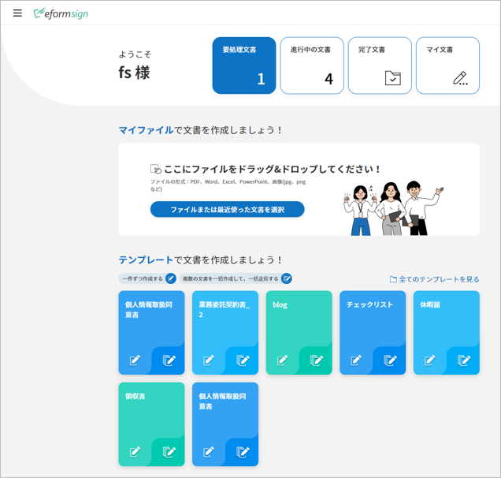
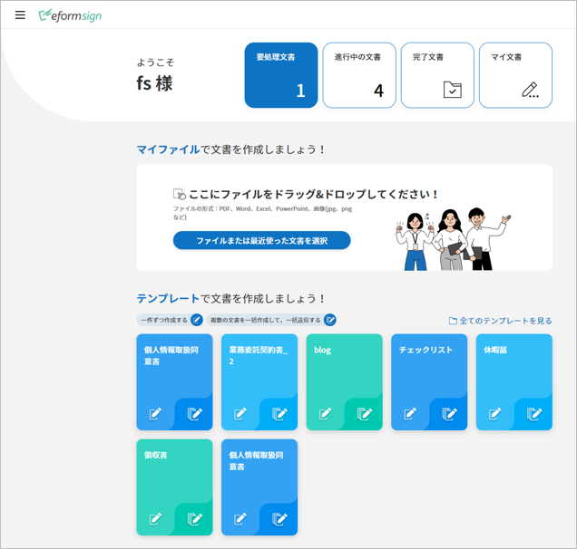
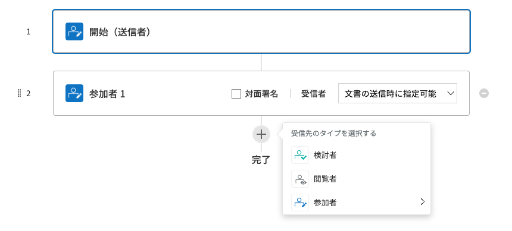

概要¶
製品の紹介¶
eformsign は、会社で発生する紙の文書を誰もが簡単に電子文書化し、いつ、どこでも、業務に活用できる上、保存されている情報を多様に活用できる電子文書サービスです。
eformsign サービスが提供する Web エディタ--である Web フォームデザイナー（Web form designer）を使って文書（PDF）をアップロードや電子文書に変換することができる上、Microsoft Office のアドイン（Add-in）モジュールであるフォームビルダー（Form builder）も提供するので、Microsoft Office の文書を作成できるのであれば、誰でも Microsoft Office で作成した既存の文書を使って電子フォームを作成することができます。
また、会社の業務プロセスに合わせてワークフローを設定することもできます。契約書・同意書・申込書などの外部文書だけでなく、決裁などの内部文書に対しても、文書の処理プロセスを自由に設定でき、多様な業務に適用可能です。また、ワークフローのステップや受信者ごとの詳細な通知、必須入力コンポーネントなどの細部設定が可能で、文書の進行状態や処理状態もリアルタイムで確認できます。
文書の改ざん（偽造・変造）を防ぐために、文書のすべてのログを含む監査証跡（オーディットトレイル）証明書を提供します。
さらに、作成者情報、グループ関連情報、直近の入力値や日付情報の自動入力をサポートし、繰り返し入力が必要な退屈な作業を最小限に抑えられる上、複数の文書を一括で作成することもできます。会社のメンバーと権限を管理できる他、文書の通知方法を詳細に設定でき、収集したデータを抽出して別途管理および活用できます。
{kind=link}
主要機能
eformsign サービスは、電子文書に署名するための電子署名機能も提供します。
電子署名とは、紙に描く署名と同じ役割をする電子的な形態の署名のことです。紙に署名するときに本人が直接署名する必要があるように、電子署名も、署名者が本人であることを識別および証明する証明段階を踏む必要があります。本人確認には、本人確認の手段として、電子メール、住民登録番号（社会保障番号、マイナンバーなど）、パスワード、電話番号や証明書などが用いられます。
電子署名の法的効力は、多くの国で段階的に適用されつつあります。eformsign の電子署名は、個人と個人、法人と個人の間で法的効力を持ち、否認防止のための多様な追加機能を提供しています。
注釈
電子署名の国別の法的効力（法的拘束力）については、以下をご参照ください。
- 韓国：PKI ベースの電子署名は、法的な地位が強く、認証された電子署名以外の電子署名であっても、署名としての効力（拘束力）を否定することはありません。電子署名法第3条第3項に基づき、電子署名は、当事者間の合意に従う署名、署名捺印または記名捺印としての効力を有するものとします。
- 米国：電子署名の技術的中立性の原則のもと、PKI ベースの電子署名に対しては別途の法的効力を与えておらず、本人確認（識別）または認証サービスを通じて電子署名の信憑性を高める方法を取ることが多いです。
- EU：適格な電子署名、高度な電子署名、一般的な電子署名の３つの署名で区分し、文書の性質に応じて法的効力を与えています。
- 日本：特定認証業務制度があり、事業ごとに国務大臣の認可を得た電子署名に対してはより強力な法的効力を与えています。
基本用語¶
eformsign サービスで使用する基本用語を紹介します。
Web フォームデザイナー（Web form designer）
Web フォームデザイナー Web フォームデザイナー は、既存の文書ファイルを eformsign サービスにアップロードし、簡単に電子形式で作成できるツールです。申込書、契約書、同意書などの PDF 形式の文書の上に、署名、テキストボックスやチェックボックスを追加してテンプレートとして保存するか、作成した電子文書を他の受信者に送信して文書の作成または署名を依頼することができます。
フォームビルダー（Form builder）
フォームビルダー フォームビルダー は、eformsign で使われる電子書式を作成するためのツールです。既存の Microsoft Office で作成したフォーム（申込書、契約書、同意書など）に署名ボックスやテキストボックスなどを挿入して電子文書に変換した後、eformsign にアップロードするときに使用します。Microsoft Office にリボンメニューの形でアドイン（Add-in）され、 OZ in office ともいいます。
ダッシュボード
ダッシュボード eformsign にログインしたら、最初に表示されるサービスのトップ画面です。ダッシュボードの左側のメニューアイコン (
 )
をクリックしたら、メニューにアクセスできます。ダッシュボードのメニューの表示は、ユーザーの権限によって異なります。
)
をクリックしたら、メニューにアクセスできます。ダッシュボードのメニューの表示は、ユーザーの権限によって異なります。eformsignのダッシュボード画面
テンプレート
テンプレート 文書に署名の入力や同意有無の表示などのコンテンツを入力する前に eformsign が使用する電子文書のフォーム（例：申請書や同意書のテンプレートなど）をいいます。テンプレートは、Microsoft Officeファイルについては eformsign のフォームビルダーで作成してアップロードすることができ、PDF ファイルについてはサービスで直接アップロードして電子文書を作成することができます。
文書
文書 文書の新規作成 メニューのテンプレートを使用し、複数の文書を作成することができます。このように作成された文書が、eformsign で文書の作成数を集計する基準になります。
文書トレイ
文書トレイ 作成された文書を保存および閲覧できる空間です。文書の状態によって3つの文書トレイに分かれて保存されます。
- 進行中の文書: 進行中の文書 自分が作成または処理済みの文書で、完了はしていない文書のリストを表示します。
- 要処理文書: 要処理文書 決裁依頼や作成依頼など、自分が処理する必要のある文書のリストを表示します。
- 完了文書: 完了文書 自分が作成または処理済みの文書のうち、完了文書のリストを表示します。
ワークフロー
ワークフロー 文書の作成から完了までの処理プロセスをいいます。テンプレート管理者は、テンプレートごとにワークフローのステップを設定できます。ワークフローの 開始 — 完了 開始 完了 はデフォルトのステップであり、次の 3 つのステップを追加できます。
- 決裁者: 決裁者 メンバーが文書の決裁と承認を行うステップです。
- 内部受信者: 内部受信者 会社の他のメンバーが文書を作成または検討するステップです。
- 外部受信者: 外部受信者 メンバー以外の外部の人が文書を作成または検討するステップです。
ワークフローのステップ
代表管理者
代表管理者 会社の代表者で、eformsign の使用を完全に制御できる権限を持ちます。
テンプレート管理の権限
テンプレートの使用権限がある場合、「テンプレート管理」メニューにアクセスでき、テンプレートの作成、変更、配布および削除を行うことができます。
文書の管理権限
文書の管理権限がある場合、「文書管理」メニューにアクセスでき、テンプレートごとに作成された文書の閲覧、完了文書の無効化の承認、システムから文書の永久削除ができます。文書の管理権限は、テンプレートごとに別途で指定できます。
{kind=link}
{kind=link}
使用フロセス¶
eformsign を使用するには、eformsign サービスに PDF ファイルをアップロードして、eformsign サービス内で電子フォームを作成するか、あるいは、Microsoft Office（Word、Excel、PowerPoint）経由でフォームを作成し、eformsign サービスにアップロードする必要があります。
注釈
サービスからファイルをアップロードする場合、現在としては PDF ファイルのみに対応していますが、今後継続して Microsoft Office ファイル、JPG、PNG などの画像（イメージ）ファイルなど、さまざまなファイル形式に対応していく予定です。
Web フォームデザイナーを活用する方法¶
Web フォームデザイナー PDF ファイルを eformsign にアップロードした後、サービス内の文書の上にテキスト、署名、日付ボックスなどの必要なコンポーネントを配置することで、テンプレートを作成できます。
アップロードした文書にコンポーネントを配置した後は、「テンプレート管理」>「設定」メニューに移動し、「全般」、「ワークフローの設定」、「通知の設定」などを変更して配布します。
「文書の新規作成」 メニューに移動すると、配布済みのテンプレートを使って文書を作成して受信者に送信できます。
{kind=link}
Webフォームデザイナーとeformsignの間の使用フロセス
フォームビルダーを活用する方法¶
フォームビルダー Microsoft Office（Word、Excel、PowerPoint）で文書を作成するか、文書ファイルをロードした後、Microsoft Office のリボン（OZ in Office）のテキスト、署名、日付ボックスなど必要なコンポーネントを文書の上に配置することでテンプレートを作成します。次に、リボンの「実行」メニューを使って、サービスにログインし、テンプレートをアップロードした後、eformsign サイトに移動します。
eformsign サイトの 「テンプレート管理」メニューに移動し、テンプレートがアップロードされていることを確認し、「全般」、「ワークフローの設定」、「通知の設定」などを変更した後、配布します。
「文書の新規作成」メニューに移動して、文書を作成し、受信者に送信します。
{kind=link}
フォームビルダーとeformsignの間の使用フロセス
最小仕様¶
フォームビルダーと eformsign の最低仕様は次のとおりです。
フォームビルダー（OZ in office）
- PC OS：Windows 7 以降
- Microsoft Office：Microsoft Office 2010 以降
eformsign および Web フォームデザイナー
- PC OS：Windows 7 以降、OS X Mavericks 以降
- ブラウザー：Internet Explorer 11 以降、Chrome 49 以降、Safari 9 以降
- モバイルOS： iOS 6.1.6 以降、Android 5.0 （Lollipop）以降
注釈
eformsign の使用において、モバイルアプリのインストールが必須ではありません。
活用分野¶
eformsign は、契約書、同意書、申請書や申込書などに活用できます。すべての文書は暗号化（AES-256）されて、PDF/A 形式で保存されます。PDF/A 形式は国際的に約束された長期保存のアーカイブ形式です。
契約書¶
電子文書を使用して、労務契約、購入/レンタル契約、加盟店（マーチャント）契約、保守契約などの様々な契約を締結できます。契約プロセスが記録される上、監査証跡証明書などをもって文書の改ざんを防止できます。また、顧客や契約の当事者と直面することなく、数百の契約を簡素化して行えます。
契約プロセスは次のとおりです。
{kind=link}
電子契約プロセス
{kind=link}
{kind=link}
{kind=link}